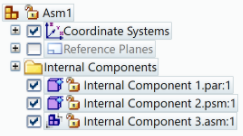
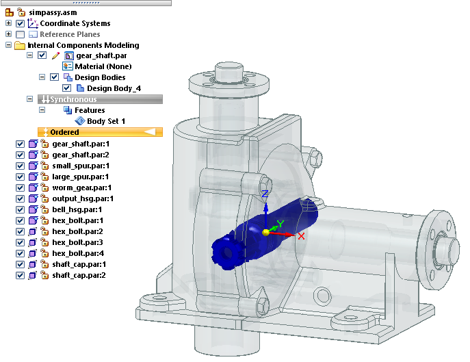
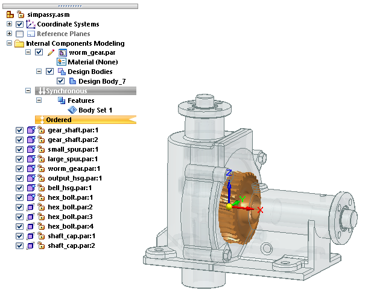
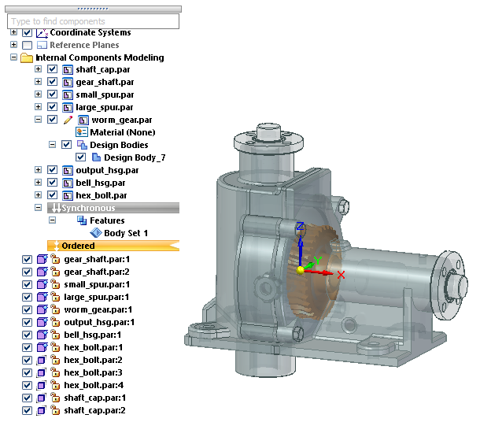

Activate Internal Component command
In the assembly modeling mode, Internal Components Modeling, new bodies are added or removed from the active internal component. You can use the Activate Internal Component command to activate a different internal component for feature editing, without having to exit the assembly.
This command updates PathFinder to display the active internal component in the Internal Components Modeling collector, expanded to show its material and bodies, with all other internal components collapsed below it.
To use this command:
-
In Assembly PathFinder in the top level of the assembly, double-click an internal component to edit it.
Example:
Example:The internal component is opened in Internal Components Modeling mode, activated and marked for edit at the top of the feature tree, as indicated by the pencil icon. Any body you add is added to this internal component.

The ✔ Show Body Features Only option is also selected in this example.
-
Double-click other internal components to open them for editing by selecting them from the list at the bottom of PathFinder.
-
When you have multiple internal components opened for edit in the Internal Components Modeling collector, right-click a different internal component and choose the Activate Internal Component command .
-
To exit internal component modeling mode, on the ribbon, click Home tab→Close group→Close Assembly Modeling.
Another shortcut command, Show Body Features Only, is available to show only the features and parents for the internal component being edited. Use this option when there are multiple internal components opened for edit, and you want to focus on just the internal component you are actively editing.
-
Right-click the Ordered or Synchronous environment bar.
-
On the shortcut menu, select ✔ Show Body Features Only.
|
On |
Off |
|---|---|
|
When this option is turned on, PathFinder filtering shows only the internal component activated for edit (the pencil icon) and the bodies and features related to it. |
When this option is turned off, all internal components opened for edit, and all other internal components in the model, are shown in PathFinder. |
|
 |
 |
How do I
Create an internal component in an assemblyApply a material to internal components
Publish internal components
Learn more
Working with internal componentsPublishing internal components
Look up more details
Create Internal Component commandCreate Internal Component Options dialog box
Create Internal Component command bar
Publish Internal Components command
Publish Internal Components dialog box